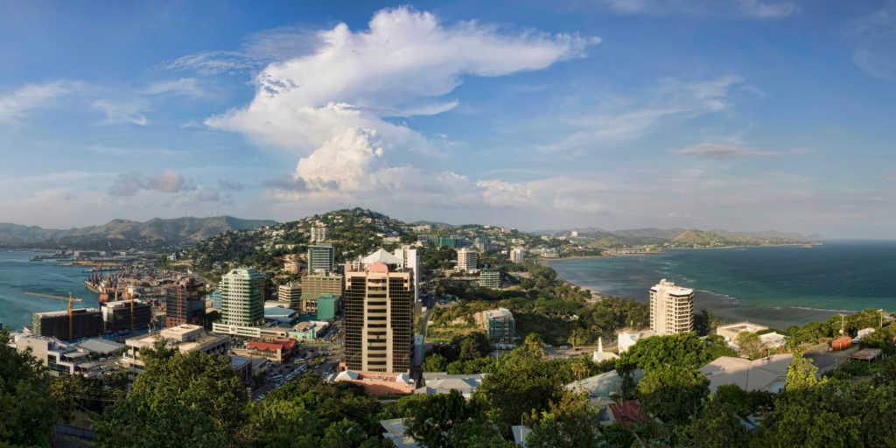

What is Corona Virus Disease or Covid-19?
Covid-19 is a new disease which is very infectious and is caused by one of the groups of viruses called the corona virus. Already known types of disease caused by corona viruses are common cold, SARS (Severe Acute Respiratory Syndrome) and MERS (Middle East Respiratory Syndrome) to name a few. Covid-19 stands for corona virus 2019.
RISK ASSESSMENT FOR PAPUA NEW GUINEA

As of 28 February 2020, the World Health Organization (WHO) has increased the assessment of the risk of spread and risk of impact of COVID-19 to very high at the global level. The very high risk assessment applies to PNG. For preparedness and response planning purposes, the following factors were also considered in Papua New Guinea: